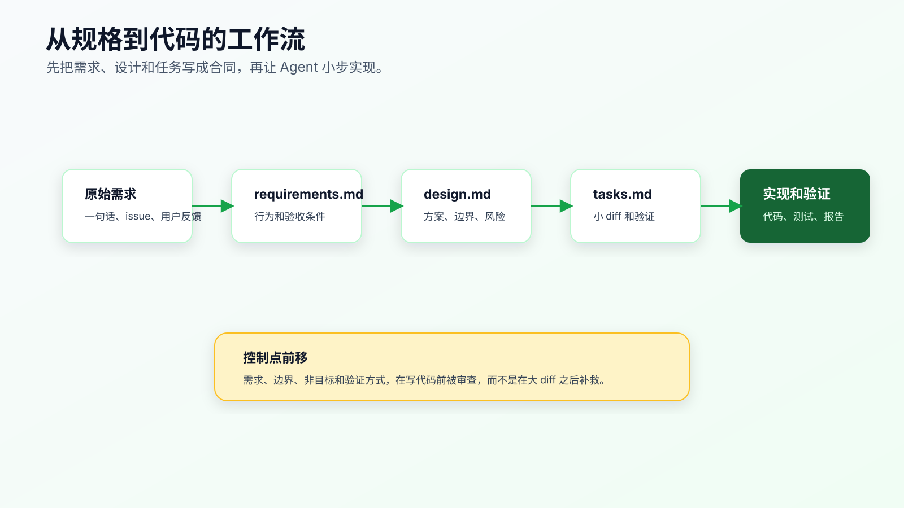
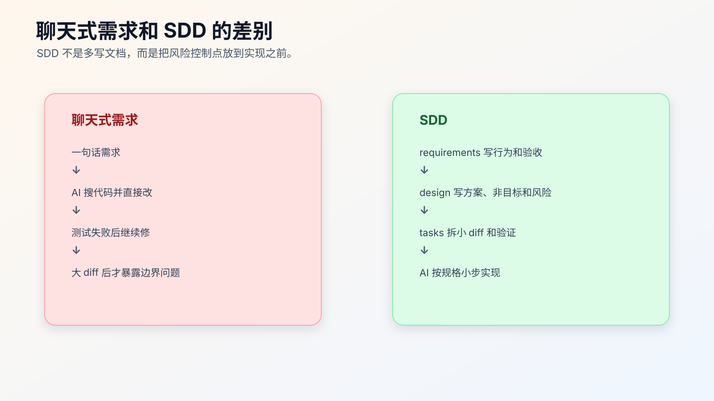

SDD 是什么：先写规格，再写代码
复杂需求里，AI Coding 最容易失控的地方，不是代码生成，而是需求没有变成可执行合同。
一句话需求很快：
帮我把订单取消逻辑改一下，已支付订单不能直接取消，要走退款流程。
Agent 也很快。它会搜索 cancelOrder、修改几个判断、补一点测试，然后告诉你完成了。
问题是，这句话里藏了太多没有说清的东西：
- 已支付订单能不能申请取消？
- 取消和退款在业务上是什么关系？
- 退款中、退款失败、部分退款怎么处理？
- 老接口返回码是否保持兼容？
- 管理后台和用户端行为是否一致？
- 历史订单怎么处理？
- 哪些测试证明完成？
这些问题如果不先写清楚，AI 会在实现时自己补。它补得越快，风险越高。
SDD，也就是 Spec-Driven Development，解决的不是“多写文档”，而是先把需求、设计和任务变成 AI 可以执行、程序员可以审查、结果可以验证的规格合同。

SDD 不是瀑布文档
很多程序员听到“先写规格”，第一反应是慢。
如果 SDD 变成几十页需求文档、审批流程和模板填空，那确实慢，而且不适合个人 AI Coding。
这里讲的 SDD 要轻得多。它只要求在写代码前，把三类东西写清楚：
requirements.md 写用户可见行为和验收条件
design.md 写技术方案、边界和取舍
tasks.md 写可执行的小步骤和验证方式
复杂一点的框架，比如 GitHub Spec Kit 或 OpenSpec，会把这些材料组织得更系统：从用户意图生成 spec、clarify、plan、tasks，再进入 implementation；OpenSpec 还会把 proposal、spec delta、design、tasks、archive 等流程放进仓库。
但你先不用急着上框架。
SDD 的最小价值是：让 AI 在写代码前先接受一份规格，而不是在实现过程中自己发明需求。
为什么 AI Coding 更需要 SDD
人类程序员拿到模糊需求时，会主动追问，也会在脑子里保留很多业务边界。
Agent 不会稳定拥有这些边界。它会根据当前上下文推断最可能的实现路径。
这在低风险任务里没问题。比如文案、样式、同类字段、局部测试。
但复杂需求里，推断会变成风险：
- 它可能把业务规则理解成普通 if/else。
- 它可能把兼容逻辑当成旧代码清掉。
- 它可能把测试改成符合新实现，而不是锁住需求。
- 它可能在一个大 diff 里混入重构。
- 它可能忽略异常路径和历史数据。
SDD 的作用，是把这些隐含判断提前暴露。
在写代码前，你要先看到：
## Requirement
已支付订单不能直接取消。用户发起取消时，系统应该进入退款申请流程。
## Must Keep
- 未支付订单仍可直接取消。
- 已发货订单仍按现有规则拒绝取消。
- 旧接口返回码保持兼容。
## Verification
- paid order cancel returns refund-required state.
- pending order cancel still succeeds.
- shipped order cancel still fails with existing error code.
这段规格比一句 prompt 更能约束 Agent。
聊天式需求和 SDD 的差别

聊天式需求通常是：
用户说一个问题。
AI 搜代码。
AI 直接改。
测试失败再修。
最后看起来能跑。
SDD 流程是：
用户说问题。
AI 和人把问题转成 requirements。
AI 给 design，人审边界。
AI 拆 tasks，每步可验证。
AI 按 task 小步实现。
测试和 diff 证明完成。
区别不是多了几个文件，而是控制点前移。
聊天式开发把风险留到实现后暴露。SDD 把风险放到实现前讨论。
SDD 最适合哪些任务
不是所有任务都需要 SDD。
适合 SDD 的任务：
- 涉及多个模块。
- 涉及状态机、权限、金额、数据迁移。
- 需求有多个角色或多个入口。
- 需要保持历史兼容。
- 测试和验证路径比较复杂。
- 需要拆多步实现。
- 人和 AI 对需求理解可能不同。
不太需要 SDD 的任务：
- 单处文案。
- 局部样式。
- 已有模式下加字段。
- 小测试补充。
- 明确的一行 bug fix。
任务越复杂，越需要先写规格。
可以用一个简单判断：
如果你没法在 5 行内说清：
目标行为、不能改变的行为、相关文件、验证方式、风险边界，
就不要直接让 AI 写代码。
这时至少写一个轻量 SDD。
三种粒度：直接改、轻量 SDD、框架化 SDD
真实项目里，SDD 不是开关。不是“用了就是规范开发，不用就是乱写代码”。
真正要判断的是：这次改动需要多强的前置约束。
| 改动类型 | 合适方式 | 判断标准 |
|---|---|---|
| 单点低风险改动 | 直接给 Agent 任务上下文 | 一两个文件内完成，旧行为清楚，验证命令明确 |
| 中等复杂需求 | 轻量 SDD | 涉及业务分支、状态、权限、兼容性、异常路径 |
| 多阶段需求变更 | OpenSpec / Spec Kit 这类框架 | 需要 proposal、spec delta、任务归档、多人审查或长期追踪 |
比如修一个按钮文案，写三份规格文件就是负担。 但改订单状态机、结算规则、权限策略、通知链路，只靠一句 prompt 就是在赌。
程序员要做的不是每次都上重流程，而是判断复杂度已经超过聊天式开发能控制的范围。超过了，就把需求、设计和任务拆出来，让 Agent 按合同工作。
SDD 在生产项目里放在哪里
个人项目可以把规格放在 docs/specs/<change-name>/。公司项目里还要考虑审查和追踪，常见位置有三种。
第一种，放在仓库内。
docs/specs/order-cancel-refund/
├── requirements.md
├── design.md
└── tasks.md
这种方式适合需求会影响代码结构，或者后续有人需要追溯为什么这么改。规格和代码同版本，PR 能一起审。
第二种，放在 issue 或需求系统里，仓库只保留链接。
Spec:
- Requirements: <issue link>
- Design: <design doc link>
- Tasks: `docs/specs/order-cancel-refund/tasks.md`
这种方式适合公司已经有需求平台，不希望把业务需求全文放进代码仓库。但任务拆分和验证命令最好仍然靠近代码，否则 Agent 很难基于真实目录执行。
第三种，用 OpenSpec 这类工具管理变更。
openspec/
├── specs/
└── changes/
└── order-cancel-refund/
├── proposal.md
├── design.md
└── tasks.md
这种方式适合规格资产开始变多，或者同一个能力会被多次变更。它的价值不是“看起来专业”，而是让变更有状态、有 delta、有归档。
不要为了形式把所有需求都塞进框架。规格文件只有在能降低误改、误解和误验收时才值得存在。
从 issue 到 SDD 的最小流程
真实需求通常不会一开始就是整齐的 spec。它可能是一条 issue、一次线上报警、一段用户反馈，或者同事在群里丢过来的一句话。
可以按下面顺序把它变成轻量 SDD。
原始材料
-> Agent 搜索相关入口、测试、错误码、配置
-> 生成 Current Behavior 摘要
-> 人确认目标行为和非目标
-> Agent 生成 requirements/design/tasks 草稿
-> 人审草稿
-> Agent 按 task 执行
-> 用测试、diff、PR 描述回写证据
注意，第一步不是让 Agent 写代码，而是让它先查证。
比如：
先不要改代码。
请基于 issue 描述搜索订单取消相关入口、状态枚举、错误码和测试。
输出 Current Behavior 摘要，每条带文件路径。
不确定的业务规则不要推断，写到 Open Questions。
这一步能把 SDD 从“凭空写文档”变成“基于仓库证据整理规格”。
如果 Current Behavior 摘要已经发现测试缺失，也不要急着实现。先在 tasks 里把“补回归测试”放到第一步。否则后面实现出来的代码，很可能只是满足 Agent 自己理解的需求。
最小 SDD 目录结构
一个最小结构可以这样放：
docs/specs/
└── order-cancel-refund/
├── requirements.md
├── design.md
└── tasks.md
也可以放到：
specs/order-cancel-refund/
.ai/specs/order-cancel-refund/
openspec/changes/order-cancel-refund/
目录名不是重点。重点是三类文件分工清楚。
requirements.md 只回答“什么行为应该发生”。
# Requirements
## User Story
用户取消已支付订单时，系统不应直接取消订单，而应进入退款申请流程。
## Acceptance Criteria
- pending 订单仍可直接取消。
- paid 订单取消返回 refund-required 状态。
- shipped 订单仍按现有规则拒绝取消。
- 旧接口错误码保持兼容。
design.md 回答“怎么改，边界在哪里”。
# Design
## Current Flow
`cancelOrder` currently handles pending and paid orders in the same branch.
## Proposed Change
Add an explicit paid-order branch that creates refund request state.
## Non-goals
- Do not change payment provider callback logic.
- Do not change shipped order cancellation.
- Do not migrate historical order data.
tasks.md 回答“按什么顺序做，每步怎么验证”。
# Tasks
1. Add regression tests for pending, paid, shipped cancellation.
- Verify: focused order cancel tests fail on paid path before implementation.
2. Update cancel order status transition.
- Verify: focused order cancel tests pass.
3. Run broader order tests.
- Verify: `npm test -- order`.
这三个文件已经足够支持一次中等复杂需求。
SDD 文件之间的边界
很多人写 SDD 会把三类内容混在一起。
requirements.md 不应该写技术方案。
差：
在 `cancelOrder` 里新增 if 判断 paid 状态。
好：
已支付订单取消时，系统应进入退款申请流程，不应直接变为 canceled。
design.md 不应该重新定义需求。
差：
我们希望用户体验更好，所以订单取消要更合理。
好：
在订单状态流转层新增 paid -> refund_requested 分支，保留 pending -> canceled。
tasks.md 不应该写成大任务。
差：
完成订单取消改造。
好：
1. 补 paid 订单取消回归测试。
2. 修改状态流转 guard。
3. 跑 order focused tests。
边界清楚，AI 才不会把需求、设计、实现混在一个大 diff 里。
一个完整例子：订单取消改退款
任务原话：
已支付订单不能直接取消，要走退款。
先写 requirements：
# Requirements
## Goal
已支付订单取消时，系统进入退款申请流程，而不是直接取消订单。
## Acceptance Criteria
- pending 订单取消后状态为 canceled。
- paid 订单取消后状态为 refund_requested。
- shipped 订单取消仍返回 existing shipped-order error。
- 旧接口返回结构不变，只允许状态值变化。
## Out Of Scope
- 支付渠道回调。
- 历史订单迁移。
- 管理后台批量取消。
再写 design：
# Design
## Current Behavior
`cancelOrder` currently allows paid order to enter canceled branch.
## Proposed Change
Add explicit status transition:
- pending -> canceled
- paid -> refund_requested
- shipped -> unchanged rejection path
## Compatibility
Keep public response shape unchanged.
## Risks
- Existing clients may assume paid cancellation returns canceled.
- Refund workflow must not be triggered twice.
最后写 tasks：
# Tasks
1. Add regression tests for pending, paid, shipped cancellation.
- Verify focused tests fail only on paid path.
2. Update status transition logic.
- Keep response shape unchanged.
- Do not touch payment callback logic.
3. Run verification.
- `npm test -- order-cancel`
- `npm test -- order`
现在再让 Agent 实现，风险会小很多。
让 AI 参与写规格，而不是直接写代码
SDD 不要求人手写全部规格。AI 很适合根据原始需求、代码搜索结果、历史 bug、接口契约生成规格草稿。
可以这样开始：
先不要改代码。
请基于下面需求生成轻量 SDD 草稿：
- requirements.md
- design.md
- tasks.md
要求：
- requirements 只写用户可见行为和验收条件。
- design 写技术方案、非目标和风险。
- tasks 拆成小 diff，每步带验证。
- 不确定的问题写到 Open Questions。
然后人审。
重点审五个地方：
- 是否遗漏旧行为。
- 是否把技术方案写进需求。
- 是否把猜测写成事实。
- 是否缺少异常路径。
- tasks 是否太大。
AI 写规格草稿没问题，但规格不能不审。
怎么审 AI 写出来的 SDD 草稿
让 Agent 写规格草稿是合理的，但不能把草稿当结论。审查时不要只看语言是否通顺，要看它有没有做不该做的判断。
可以按下面顺序审。
第一，审需求是否来自输入，而不是模型推断。
如果原始需求只说“已支付订单不能直接取消”，AI 草稿却写出“退款请求必须异步创建”，这就是未确认结论。它应该进入 Open Questions，而不是 Acceptance Criteria。
第二，审设计是否基于真实代码。
design.md 里每个 Current Flow 都应该能对应到文件路径、入口函数或测试。如果它写的是“订单模块会处理取消逻辑”，但没有路径，这份 design 不能作为执行依据。
第三，审任务是否能形成小 diff。
一个 task 如果同时写“改状态机、接退款服务、改前端、补测试”，就太大。真实执行时要拆开，否则审 diff 时不知道哪个改动导致行为变化。
第四，审验证是否覆盖风险。
如果 design 写了“重复取消可能创建重复退款”，tasks 里就必须有重复取消测试或幂等检查。风险和验证断开，规格只是提醒，不会改变执行结果。
第五，审非目标是否足够具体。
“不做额外改动”没有约束力。要写成“不改支付回调”“不改后台批量取消”“不迁移历史订单”“不改变 public API response shape”。
一份可执行的 SDD 草稿，至少要经得起这几个问题：
这些需求是否都能追溯到原始输入或已确认事实？
这些设计判断是否基于真实源码？
这些 task 是否能单独审查？
每个风险是否有验证动作？
哪些地方必须停止并让人确认？
答不上来，就不要让 Agent 进入实现。
SDD 和任务上下文包的关系
任务上下文包适合一次中等风险改动。它回答：
这次任务要改什么，先看哪些文件，不能改什么，怎么验证。
SDD 适合更复杂需求。它进一步拆成：
需求合同 -> 技术方案 -> 可执行任务
两者不是替代关系。
一个任务上下文包可以升级成 SDD：
Objective -> requirements.md
Constraints -> requirements + design
Files -> design
Done When -> tasks
Open Questions -> requirements/design clarify
当任务上下文包写到很长，说明它可能需要 SDD。
SDD 和 OpenSpec / Spec Kit 的关系
SDD 是方法。OpenSpec 和 Spec Kit 是把这个方法工具化的框架。
GitHub 的 Spec Kit 把 spec-driven development 做成一套流程工具，强调从 spec、plan、tasks 进入实现。OpenSpec 也把 proposal、spec delta、design、tasks、archive 等材料放进仓库，适合管理需求变更。
对个人程序员来说，不需要一开始就决定“必须用哪个框架”。
先理解 SDD 的核心：
先写需求行为。
再写技术边界。
再拆可验证任务。
最后让 AI 小步实现。
等你发现手写 specs 变多、变更需要归档、多个任务互相影响，再引入 OpenSpec 或 Spec Kit。
SDD 不是让 AI 变慢，而是让返工变少
很多人排斥 SDD，是因为把它理解成“写完文档再开发”。在 AI Coding 里，真正耗时的通常不是写规格，而是后面几类返工：
- Agent 改对了一个入口，漏了另一个入口。
- 测试被改到适配新实现，旧行为没有锁住。
- 需求里的非目标没写，AI 顺手重构了相邻模块。
- 兼容性问题上线前才被前端或调用方发现。
- 一个大 diff 里混了业务改动、格式化和重命名，review 无法判断。
轻量 SDD 的成本大约是十几到几十分钟。它换来的不是“文档完整”，而是改动前先拿到几个关键证据：
行为合同：requirements.md
技术边界：design.md
执行顺序：tasks.md
验证证据：每个 task 的命令和结果
如果这些证据能让后面少一次大返工，就已经值了。
SDD 的交付证据长什么样
一次合格的 SDD 驱动改动，最终不应该只留下代码 diff。PR 或变更记录里至少应该能看到这些信息：
Spec:
- requirements.md: paid order cancel enters refund flow
- design.md: status transition layer owns paid cancel rule
- tasks.md: 5 tasks, executed 1-5
Verification:
- `npm test -- order-cancel` PASS
- `npm test -- order` PASS
- API response shape compatibility check PASS
Not changed:
- payment provider callback
- admin batch cancellation
- historical order migration
Residual risk:
- old mobile client needs display check for `refund_requested`
这段不是给领导看的报告，而是给 reviewer、未来的自己和后续 Agent 看。半年后再改退款逻辑时，它能说明当时为什么没有动支付回调，为什么新增了 refund_requested，验证过哪些路径。
SDD 和团队流程怎么兼容
即使专栏讲的是个人 AI Coding，很多读者也在公司项目里工作。轻量 SDD 不应该绕过团队流程，而是把个人使用 Agent 的过程变得可审。
如果团队已经要求 issue、设计评审、PR、CI，你可以这样嵌进去：
- issue 里保留需求背景和确认结论。
- 仓库里保留和代码强相关的 requirements/design/tasks。
- PR 描述里链接 spec，并列出验证命令。
- CI 仍然是最终合并前的硬检查。
- code review 重点看 diff 是否符合 spec，而不是只看实现是否能跑。
这套做法不会要求团队接受某个 AI 工具。即使 reviewer 不用 Agent，也能看懂：需求是什么、设计边界是什么、任务怎么拆、测试跑了什么。
个人 AI Coding 想进入生产项目，最需要的不是“把 AI 写得多厉害”，而是让别人能审查你的 AI 参与过程。
常见错误
错误一：把 SDD 写成文档负担。
如果文件很长，但没有验收条件、非目标和验证命令，那不是 SDD，只是长文档。
错误二：requirements 里写实现。
需求应该写行为，不写代码位置。技术方案放 design。
错误三：design 里不写非目标。
非目标很关键。它告诉 Agent 这次不改什么。
错误四：tasks 太大。
“完成订单取消改造”不是 task。task 要能形成小 diff，并有验证方式。
错误五：规格写完不更新。
实现过程中发现需求变化，要更新规格。否则规格会变成过期上下文。
常见问题
小需求要不要写 SDD？
不用。单点低风险改动可以直接用任务上下文包，写清目标、文件范围、不能改什么、验证命令就够。SDD 用在需求本身会分叉、会影响兼容性、会跨模块的场景。
SDD 会不会限制 Agent 的发挥？
会限制它在错误地方发挥。好的规格不限制实现细节，只限制业务边界、非目标和验证结果。Agent 仍然可以搜索代码、提出方案、拆任务，但不能绕过已确认的合同。
requirements、design、tasks 一定要三个文件吗？
不一定。小需求可以合成一个 spec.md。当内容开始变长、不同人需要审不同部分时，再拆成三个文件。拆分是为了降低混乱，不是为了满足格式。
OpenSpec 或 Spec Kit 是不是必选？
不是。它们适合规格资产变多、变更需要归档或团队需要统一流程时使用。个人程序员先掌握轻量 SDD，再判断是否引入框架。
如果实现过程中发现规格错了怎么办？
先停，不要让 Agent 继续补。更新 requirements 或 design，再重新生成后续 tasks。规格错了还继续实现，只会把错误固化进代码和测试。
可以先实践的一件事
下次遇到复杂需求，不要直接写代码。先建一个目录：
docs/specs/<task-name>/
├── requirements.md
├── design.md
└── tasks.md
然后让 AI 先写草稿：
先不要改代码。
请把这个需求整理成 requirements/design/tasks 三个文件的草稿。
不确定的地方写 Open Questions。
每个 task 必须能形成小 diff，并说明验证方式。
人审完后，再让 Agent 只执行第一个 task。
这就是 SDD 在个人 AI Coding 里的最小落地方式。
如果 requirements.md 写不清，后面的 design 和 tasks 都会漂。先把模糊需求变成能测试、能追问、能拒绝越界改动的需求合同。
可复查资料
- GitHub Spec Kit 官方文档：https://github.github.com/spec-kit/
- GitHub Spec Kit 仓库：https://github.com/github/spec-kit
- GitHub Blog: Spec-driven development with AI：https://github.blog/ai-and-ml/generative-ai/spec-driven-development-with-ai-get-started-with-a-new-open-source-toolkit/
- OpenSpec 官方站：https://openspec.dev/
- OpenSpec GitHub 仓库：https://github.com/Fission-AI/OpenSpec/